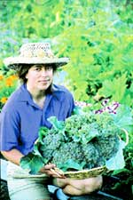
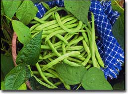
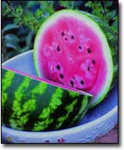
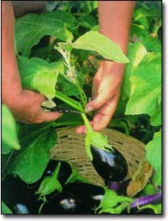
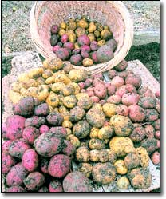

The secret to enjoying garden-fresh produce at its prime is knowing when to harvest. If you’ve ever eaten a melon that lacked sweetness, or green beans that were fibrous and tough, you know how crucial timing can be. Just as different vegetables have their own distinct needs for planting, fertilizing and growing, each also will give certain clues when it is ready to pick.
A few vegetables are very accommodating and can stay in the ground for weeks until you’re ready to eat them. Others need continual picking to ensure ongoing production of a crop, but most have a short window of time during which they can be gathered at peak flavor. After a vegetable passes its prime, it undergoes permanent changes that alter its taste, appearance, quality and, sometimes, its future production. Sugars turn to starches, and the texture becomes mushy, like an overripe melon or chewy green beans.
On the other hand, if you pick too soon, you will harvest a vegetable that has not had adequate time to develop peak flavor, substance and nutrition.
Here’s a guide to help you know precisely when your summer and fall fruits and vegetables have reached their peak of perfection and are ready to be picked and eaten:
Beans should be checked daily for harvesting. Snap beans/green beans are ready when the pods have filled out but the seeds are still tiny, which, depending on weather conditions, is usually some two to four weeks after bloom. The pods should be firm and crisp, with pliable tips. Pick haricot (French filet) types when the pods are about one-eighth inch in diameter, while they’re still young and very slender.
Beets can be picked when the roots are from 1 1/2 to 3 inches in diameter, and most taste best when they are about the size of a pingpong ball or golf ball. White and golden varieties are tasty and tender until they reach baseball size, but storage (winter-keeping) varieties remain tender until they reach softball size or even slightly larger. When harvested past their prime, beets have a strong taste and tough, pithy texture.
Broccoli should be harvested when the buds are still tight and before the florets begin opening their yellow flowers. For the first harvest, cut the central stalk at a slant about 5 to 6 inches below the base of the head. This prevents rot and encourages production of new side shoots, which can be harvested at a later date.
Brussels sprouts develop a sweet flavor after the plant has gone through a couple of mild frosts. The buds at the base are the first to mature, so pick from the bottom up when sprouts become firm and are about 1 inch in diameter. To encourage larger sprouts, which mature more uniformly, cut the top of the plant back by about 4 inches about four weeks before the harvest is to begin.
Cabbage offers some leeway as to when it can be picked at perfection, though larger heads are more likely to split than smaller ones. If a head is threatening to split, twisting it a quarter turn will slow down the splitting. Cabbage heads that have split are still tasty and should be picked; they just won’t store as well as solid heads. Begin harvesting cabbage anytime after developing heads become solid and firm.
Carrots usually hold well in the ground and can be harvested over a long period of time. Begin as soon as the roots color up and grow to from a half to 1 inch in diameter. Continue harvesting until the last frost-sweetened carrots are dug before the ground freezes for winter. Careful digging, rather than pulling, is best as a harvest method; only pull the roots if your soil is extremely friable. The texture of a fresh carrot is at its finest in the young ones, but the sugar content heightens as they mature.
Cauliflower is at its best when 6- to 8-inch, fully formed heads are firm and the curds in them are solid. If you wait until after the curds open (they resemble rice grains), you have passed the window of opportunity for harvesting optimum-quality heads.
Corn should be picked when the kernels have swollen to their maximum juiciness, usually about 20 days after the first silk strands appear. When the silks begin to turn dry and brown, partially peel back the husks and pierce a kernel with your thumbnail. If a milky juice squirts out, the corn is ready to eat. To harvest, snap off the ear by pulling it downward, then twisting and pulling again. If allowed to overripen, corn will loose its sweet flavor and become starchy.
Cucumbers grow fast, so check them daily if you plan to keep up with the peak of harvest and ensure continued production. For fresh use, a cucumber should be filled out enough to be crisp and juicy, and measure from 6 to 9 inches long. For sweet pickles, cucumbers are best harvested when they measure from 1 1/2-to-2 1/2-inches long; for dill pickles, the ideal length is from 3 inches to 4 inches.
Eggplant has received a bad rap as a bitter-tasting vegetable because of the oversized fruits often sold in supermarkets. Eggplant past its prime is soft, pithy and laden with seeds, which are what give it the bitter taste. Fruit harvested while still young and firm actually is rather sweet and very tender; that’s when the vegetable measures from 4 inches to 8 inches in length, or about one-third of its mature size. Use strong scissors or pruning shears to harvest the fruit, rather than pulling, which will injure the plant.
Kale leaves - a fall green - usually can be harvested about 40 days after planting, however, a frost really sweetens and enhances the flavor, so wait until then if you can. Harvest by taking off outer leaves as needed; because the plants are frost-hardy, in mild winter areas, you can pick fresh kale at its prime well into December.
Leeks can be pulled from the ground anytime the stem is an inch in diameter or larger. Use them when they still are very small for the mildest, most delicate flavor. Cut off the roots and most of the top green portion before storing in the refrigerator. (Save the green part to use in soup stock.) Many varieties will overwinter in mild climates and remain harvestable into March. After that, they can develop a hard core in the center that will not soften even when cooked.
Lettuce can be picked in stages: tiny leaves for a gourmet salad mix or larger leaves for a main dish. For loose-leaf varieties, pick outer leaves as needed, or cut the head an inch above ground for a cut-and-come-again crop.
Butterheads, romaines and crispheads should be harvested when the head begins to form, and for peak perfection, before the center begins to elongate, which means that the plant is preparing to flower. After that point, the lettuce will taste bitter. For refrigerator storage, run washed leaves through a salad spinner, place in a sealable plastic bag with a paper towel or tea towel, and store in the crisper section of your refrigerator.
Melons can be a challenge, but several telltale signs can help you decide when the fruit is perfectly ripe. On some cantaloupes, which also may be called muskmelons, “netting” (“venation”) that overlays the skin becomes more pronounced and the melon will separate easily from the vine when it’s fully ripened.
True cantaloupes and honeydew-types soften and give slightly to pressure on the blossom end, and the background color will change; cut these from the vine as they will not slip from the stem. Pick for optimum quality after the tendril closest to the fruit turns completely brown. On watermelons, the surface of the fruit loses its gloss, the belly side touching the ground changes from white to creamy yellow and the tendril turns brown and begins to shrivel. Thumping as a measure of ripeness is a matter of luck; it works for some and not for others. Those who claim the gift say the thump should sound hollow and deep.
Okra should never be allowed to get too big. Harvest short-pod varieties when they are from 2 to 3 inches in length, usually about four to six days after flowering. Long-pod types such as ‘Cow Horn’ are best picked at 6 to 8 inches in length. Tips of tender pods will snap, but those on older pods won’t because pods mature from the tip down, which means the tip turns fibrous first. Check pods daily because they can go from prime to pitiful in 24 hours’ time.
Onions can be harvested in two stages: The green “scallion” stage or the bulb stage. Green onions are best when tops are 6 to 8 inches tall and stems are the thickness of a pencil. For maximum size and mature bulbs, wait until more than half the tops have fallen down, then push over the remaining tops. A week later, harvest the bulbs and set them in the sun for a day or two (cover at night). Cure the bulbs with tops intact for about a week in a sheltered, dry area; during this time, the outer layers form a dry skin. After that, cut the tops about an inch above the bulbs, trim off the roots and store the onions in a well-ventilated, dry, cool and dark location.
Peas are best harvested in the early morning or early evening, but the stage at which to harvest the pods depends on the type. Both snap peas and snow peas are eaten pod and all. For best flavor, pick snap peas when plump and well colored but not as fully filled as garden peas. Pick snow peas before the pods fill out, when they are young, tender and thin. In contrast, garden peas, often referred to as shell peas, are ready to harvest and shell when the pods are bright green and fully filled. Then, the peas inside are sweet, plump and tender - a true taste treat of the early summer garden.
Peppers can be harvested anytime in the immature green stage - the more you pick, the more your plant will produce. However, for a fully flavored and sweet pepper, wait until it changes color. (Some varieties turn red, others gold, some yellow and still others orange.) Hot peppers also usually take on more flavor when their color changes as they mature.
POTATOE's give an easy signal as to when they’re ready to harvest: their tops die down. About two weeks after that happens, dig the potatoes; the delay gives them time to toughen their skins for long-term storage. You can leave potatoes in the ground longer; just be sure to dig them before frost or rain sets in. Carefully dig tubers with a spading fork, allow them to dry for a few hours in the sun, then cure them for about two weeks at 50 to 60 degrees under shelter, in a well-ventilated, high-humidity area. After they are cured, potatoes store best at 40 to 50 degrees.
Southern peas , such as black-eyed peas and crowder peas, are not peas at all but rather a type of bean that grows in warm locations. Pods are ready to harvest when well filled with fully developed seeds. Harvest purple pods when the hulls turn mostly red, and green pods when the hulls turn a light yellow-green but not too yellow.
Summer squash is at its best if harvested on the small side, while skins are still tender. For zucchini, straightneck and crookneck types, harvest when fruits are 4 to 8 inches in length; for patty pan varieties, up to 3 inches in diameter. Don’t let your squash get too big or the plant’s production will falter.
Tomatoes are tops if picked between the semi-firm and semi-soft stages, when the fruits are fully colored (whether gold, pink, orange, red, black or white). Second best is to pick fruits a few days early and allow them to finish ripening indoors, an added benefit when temperatures are too hot or frost threatens. Tomatoes are best stored at temperatures higher than 50 degrees - never in the refrigerator, which turns their texture to mush.
Winter squash that passes the thumbnail test (the skin should resist puncture from your thumbnail) usually is fully ripe and ready to harvest. The stem hardens and the skin color deepens: Spaghetti squash turns a mellow golden yellow, butternut deepens to a subtle orange-tan and a splotch of orange-yellow often will appear on the underside of acorn, delicata and buttercup types. Most winter squash will keep up to four months after harvest if you follow these tips: Harvest after the first light frost to enhance sweetness but before a hard frost; never handle squash by the stem (fruits can rot in just a few weeks after the stem breaks); cut - don’t pull - squash from the vine, and leave 2 inches of the stem attached; wipe off any dirt but don’t get the fruits wet; cure fruits in a warm place (80 to 85 degrees is ideal) for a couple of weeks. Once cured, store in a cool, dry location at 50 to 55 degrees.
Worth the Wait...
When harvest time finally arrives, the fun really begins!
Scrutinize the fruits of your labor daily. Keep handy a sharp knife, pruning shears, and a bucket or a basket. At the very moment your (now) discerning eye sees “ripe,” whisk those prime morsels out of your garden and into your kitchen, and devour them with gusto.
Or, preserve them for future gusto. Handle every piece like the delicate jewel it is, and avoid bruises and nicks that would invite decay and jeopardize your enjoyment of the essence of perfection.
|
 ?Totem? snap beans, picked at the peak of perfection, when the seeds inside still are tiny. |
 Watermelons are ripe when the skins lose their gloss and the belly sides turn creamy yellow. |
 For peak eggplant flavor, pick the fruits when they are young and still firm. |
|
 You can start harvesting new potatoes when they are golf-ball size. Without digging, gently brush the dirt back from the stems and pick out a few potatoes. Then, cover the stems again, and the plants will continue to set more potatoes. |
 |
|